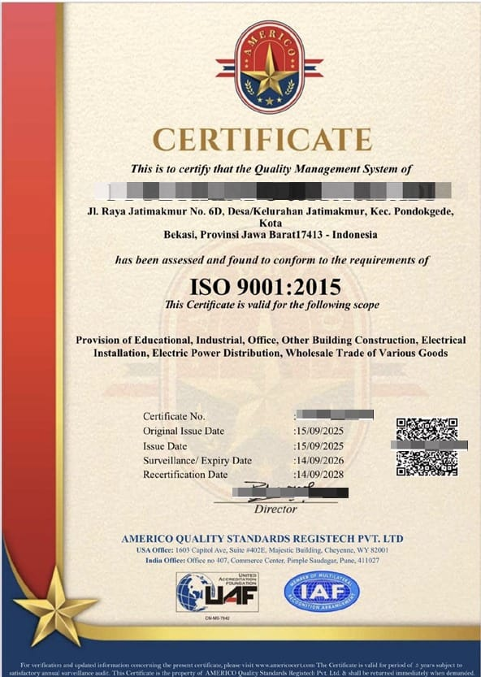
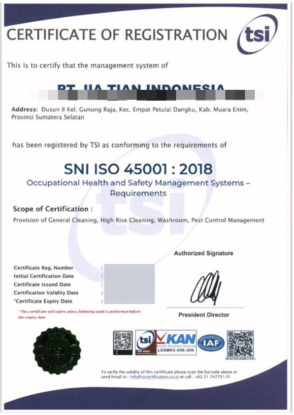

Sertifikat berstandar dunia yang membuka pasar global untuk perusahaan Anda
Sertifikasi ISO terakreditasi IAF dijamin diakui dan dipercaya secara internasional — diterima tanpa proses tambahan dalam tender luar negeri maupun hubungan dengan pelanggan global.
Standar paling banyak digunakan: ISO 9001 (mutu), 14001 (lingkungan), 45001 (K3), dan 37001 (anti penyuapan). Kami mendampingi mulai gap analysis, implementasi sistem, audit eksternal, hingga sertifikat terbit.
Investasi mutu yang mengantarkan perusahaan Anda ke pasar global
Sertifikat terakreditasi IAF diakui lintas negara untuk tender, pelanggan internasional, dan partner bisnis.
Proses kerja lebih tertata, terdokumentasi, dan efisien sesuai standar manajemen terbaik dunia.
Berkualitas yang terverifikasi membuat perusahaan Anda unggul merebut kepercayaan pelanggan besar.
Pilih standar yang paling sesuai kebutuhan perusahaan Anda
Konsistensi kualitas produk dan layanan sesuai harapan pelanggan.
Pengelolaan dampak lingkungan dari aktivitas operasional perusahaan.
Sistem K3 untuk menekan risiko kecelakaan dan penyakit akibat kerja.
Tata kelola yang bersih dan bebas praktik penyuapan.
Menjamin keamanan produk makanan dan minuman.
Melindungi data dan informasi penting perusahaan.
Tiga langkah terarah menuju sertifikat ISO terakreditasi IAF
Penilaian kesiapan dan identifikasi celah sistem yang ada.
Penyusunan sistem, dokumentasi, dan kesiapan menghadapi audit.
Audit oleh lembaga terakreditasi hingga sertifikat resmi terbit.
Berikut contoh sertifikat ISO dengan akreditasi IAF dan KAN yang kami dampingi penerbitannya.


Penawaran disesuaikan berdasarkan standar, skala, dan kebutuhan perusahaan. Konsultasikan kebutuhan Anda untuk penawaran terbaik.
Masih ragu? Ini jawaban untuk kekhawatiran Anda
ISO akreditasi diakui lembaga akreditasi dan diterima secara internasional; non-akreditasi memiliki pengakuan yang lebih terbatas.
Tergantung kesiapan perusahaan dan kompleksitasnya; dengan pendampingan kami proses lebih terarah mulai dari gap analysis hingga audit.
Tergantung profil bisnis; konsultasikan dengan tim kami untuk rekomendasi paling tepat.
Bisa. Acuan utama adalah kesiapan sistem, bukan besar kecilnya perusahaan.
Penawaran kami transparan dan dapat disesuaikan dengan kebutuhan. Konsultasikan lingkup yang Anda perlukan agar kami susun paket yang tepat dan jelas.
Sertifikat ISO yang diakui dunia membuka pintu pasar yang selama ini tertutup. Mulai perjalanan mutu perusahaan Anda dengan konsultasi gratis hari ini.
Tim kami siap membantu Anda 24/7. Konsultasi gratis tanpa biaya.
KONSULTASI GRATIS